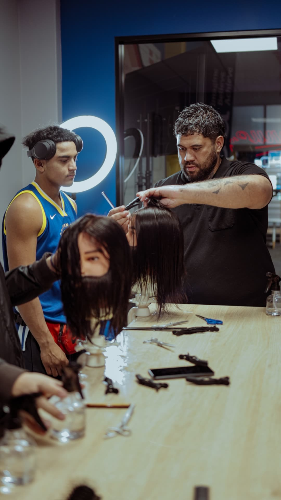
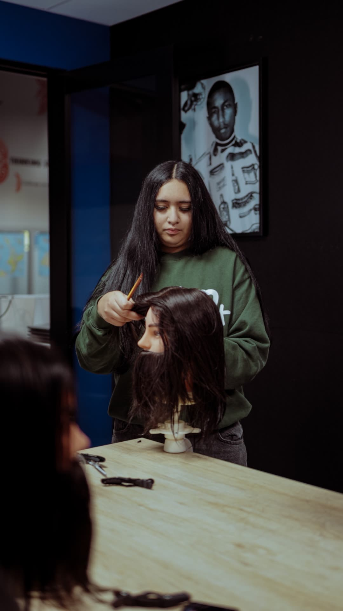
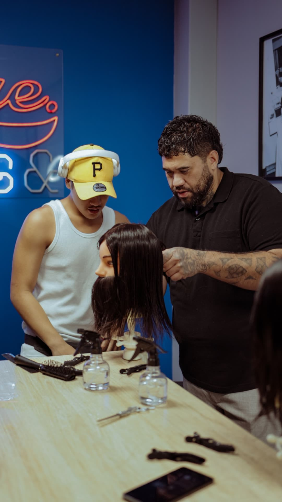
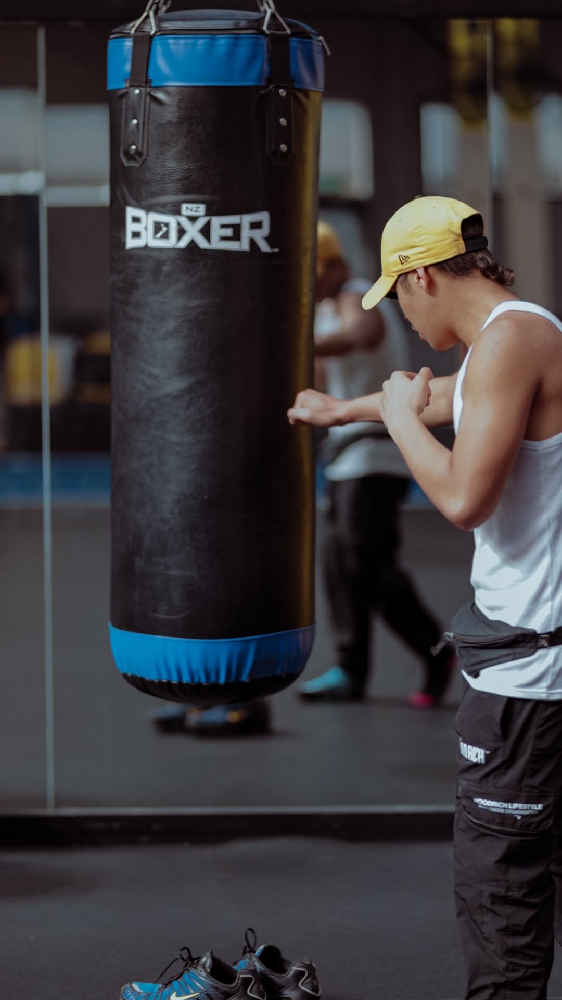
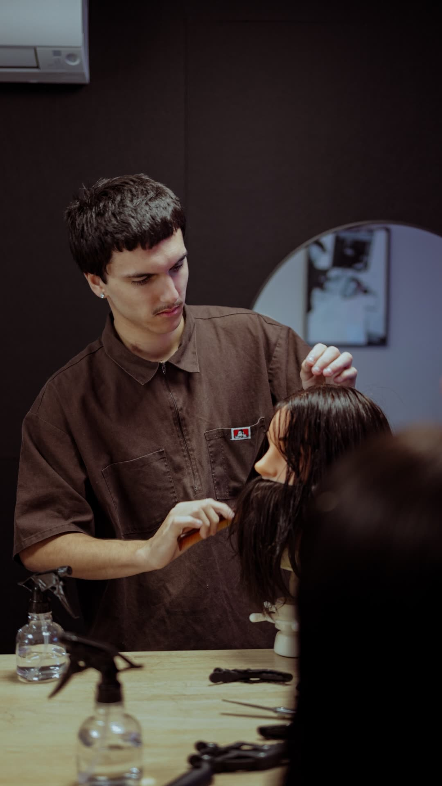
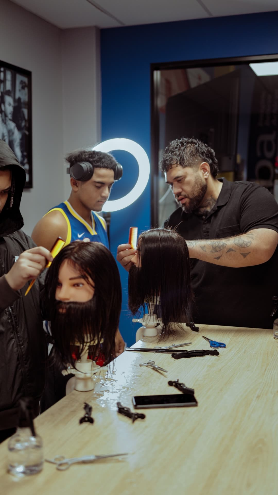
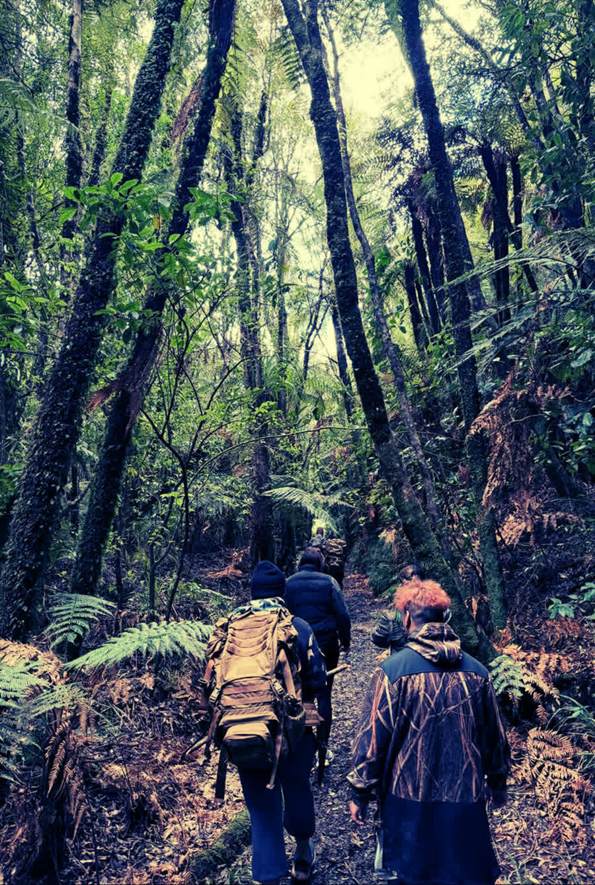

A real trade
Twelve modules of practical barbering, from first scissor control to precision fades and client ready work.
Barbering & Wellbeing · Tauranga, Aotearoa
Tūranga Aiga empowers rangatahi through the barber's chair, pairing a real trade with hauora, identity and belonging. A pathway from the classroom to a career, grounded in Te Ao Māori.

Every young person carries potential. We help it take root through skill, wellbeing and whanaungatanga.
Ko wai mātou · Who we are
Tūranga Aiga is a charitable trust based at Merivale Community Centre in Tauranga. We deliver a hands on Barbering & Wellbeing programme that teaches young people a genuine trade while nurturing their hauora, confidence and sense of belonging.
Our name means the standing place of the family. For many of the rangatahi we work with, the barber's chair becomes exactly that: a place of care, kōrero and mana. We meet young people where they are and walk alongside them toward work, study or apprenticeship.



Twelve modules of practical barbering, from first scissor control to precision fades and client ready work.
Built on Te Whare Tapa Whā: tinana, hinengaro, whānau and wairua woven through every day.
Whakawhanaungatanga, tuakana teina and reflection create a safe space for young people to grow.
Career planning, financial literacy and community service that lead to work, study or apprenticeship.
Te hōtaka · The programme
A structured 12 module journey delivered over the school year. Each day runs 9:30am to 3:00pm and blends practical cutting on the tools with wellbeing, reflection and real community service, closing with a public showcase and certificates.
Ngā reo · In their words

“Grateful for the vision Shanon provided.”
Kobe

“My strength is my confidence now.”
Carter
Ngā aratohu · The 12 modules
From building trust on day one to celebrating achievement with whānau at the showcase, every module weaves craft and care.
Te take · Why it matters
of Bay of Plenty children and young people aged 0 to 20 are Māori, and our programme is designed to serve them.
Aroturuki Tamarikiof young Māori are not in employment, education or training, a gap our programme is built to close.
MSD researchrangatahi supported through earlier barbering & wellbeing delivery in our community, the foundation we build on.
Community delivery, 2023“The chair is more than a cut. It's where a young person is seen, heard and reminded that they matter.”
Tūranga Aiga kaupapa
Ngā hoa mahi · Our partners
Tūranga Aiga works alongside trusted community organisations who share our commitment to rangatahi wellbeing.
Our home base and delivery venue in Tauranga.
Connecting rangatahi through sport, movement and mentoring.
Māori health and wellbeing partner across the western Bay of Plenty.
Supporting accreditation and vocational pathways.
Tautoko mai · Support the kaupapa
Every dollar goes directly into equipping and supporting rangatahi. Our programme is 100% free to participants, and funders and sponsors make that possible. Choose a level that suits you, or talk to us about a tailored partnership.
Gift a kit
$889
Fund a full professional barber kit for one rangatahi, theirs to keep and build a career with.
Sponsor a rangatahi
$3,900
Carry one young person through the full 12 module journey: kit, kai, materials and NZQA accreditation.
Sponsor a course
$23,180
Back an entire cohort of rangatahi through one complete course, from first cut to graduation showcase.
Any amount
Koha
Every contribution helps, going toward kai, materials, transport and the wellbeing support woven through each day.
Get in touch and we'll share our donation details, funding proposal and reporting, whatever your process needs.
Tūranga Aiga is a registered charitable trust based in Tauranga. A full programme budget and funding proposal are available on request.
Whakapā mai · Get involved
Whether you're a funder, an employer offering apprenticeships, a community partner or a whānau wanting a place for your rangatahi, we'd love to kōrero.
